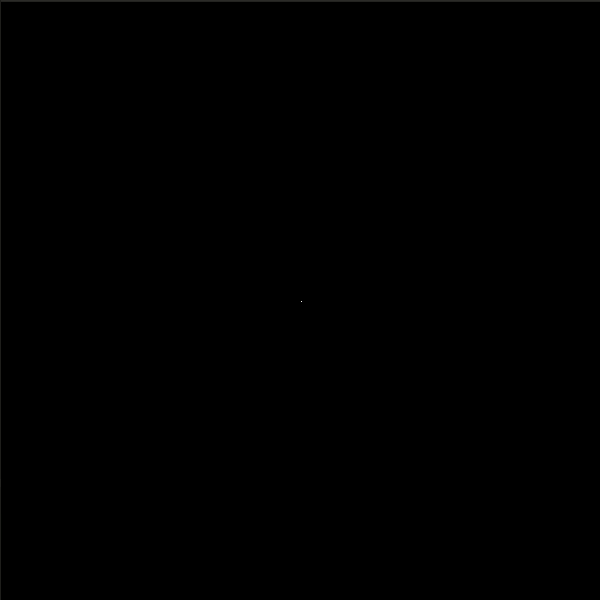

-
- A simple CPU path tracer written in C, based off of Peter Shirley's
Ray Tracing Weekend book series.
- Features:
- Intersection acceleration from a bounding volume hierarchy of scene objects
- Multithreading
- Diffuse, metal, dielectric, and emmisive materials
- Image-based lighting from HDRI sky-boxes
|

|
Real-time Diffusion-Limited Aggregation Simulation [Github]
- Simulating DLA in real-time using OpenGL compute shaders.
- Compute shader randomly updates the positions of up to millions of particles.
- When a particle hits the cluster, it is added to it.
- User can place their own seed(s) for the cluster.
- Debug/performance statistics using Dear Imgui.
|

|
Slime Mold Simulation [Github]
- An agent-based simulation of the foraging and exploratory behavior of slime molds.
- Uses OpenGL compute shaders to update the positions of agents every time step.
|

|